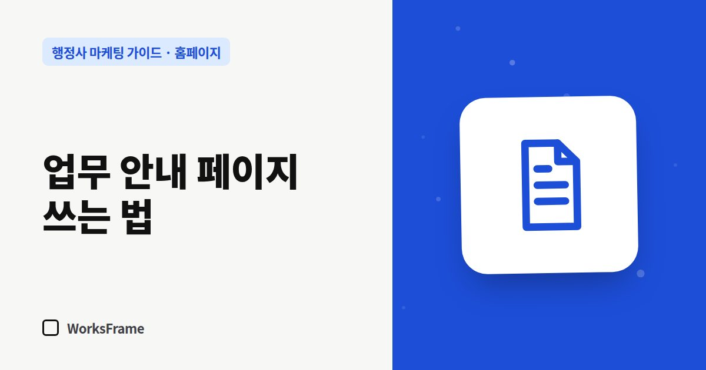

홈페이지
업무 안내 페이지 쓰는 법 — 대상·요건·서류·절차·기간 순서로
한 줄 답
대상 → 요건 → 준비서류 → 절차 → 기간 → 비용 → 자주 묻는 질문 순서로 쓰고, 제목은 고객이 검색하는 말로 쓰세요. 한 페이지에는 한 업무만 담습니다.

홈페이지에서 실제로 문의를 만드는 페이지는 첫 화면이 아니라 업무 안내 페이지입니다. 고객은 “내 상황”으로 검색해서 이 페이지로 바로 들어오기 때문입니다.
고객이 궁금한 순서대로
| 순서 | 제목 예 | 채울 내용 |
|---|---|---|
| 1 | 이런 분께 필요합니다 | 대상, 흔한 상황 2~3개 |
| 2 | 요건 | 핵심 조건을 짧게, 예외는 “상담 시 확인” |
| 3 | 준비서류 | 체크리스트 형태 |
| 4 | 절차 | 단계별 번호 목록 |
| 5 | 기간 | 보통 걸리는 기간과 변수 |
| 6 | 비용 안내 | 수임료 안내 방식, 별도 비용(인지대 등) |
| 7 | 자주 묻는 질문 | 상담에서 반복되는 질문 3~5개 |
제목은 고객의 말로
- 사무소 말: “체류자격 변경 업무”
- 고객 말: “E-9에서 E-7-4로 바꾸려면 무엇을 준비하나요?”
제목과 첫 문단에 고객이 검색할 표현을 넣으면 검색에도 걸리고, 들어온 사람도 “내 얘기네” 하고 읽기 시작합니다.
정확성 체크
- 근거가 되는 공식 안내(법령, 관계 기관 안내)를 확인하고 날짜를 적어 두세요. 예: “2026년 9월 기준”
- 확실하지 않은 부분은 단정하지 말고 “개인 상황에 따라 다르니 상담에서 확인합니다”로.
- 허가·발급을 보장하는 표현은 쓰지 않습니다.
한 페이지 = 한 업무
여러 업무를 한 페이지에 몰아 쓰면 어느 검색어에도 약해집니다. “체류기간 연장”과 “체류자격 변경”은 따로 쓰는 편이 낫습니다. 그대로 채워 쓰는 틀은 업무 안내 글 템플릿에 있습니다.
마지막은 상담 연결
페이지 끝에 “이 업무 상담하기” 버튼을 두고, 문의 폼의 업무 항목이 미리 선택되게 하면 고객이 한 번 더 고르지 않아도 됩니다.
자주 묻는 질문
서류 목록을 다 공개하면 고객이 혼자 해 버리지 않을까요?
혼자 할 수 있는 고객은 어차피 스스로 찾아봅니다. 목록을 보고 “생각보다 복잡하다”고 느낀 고객이 연락합니다. 공개된 안내는 전문성을 보여 주는 근거가 됩니다.
얼마나 길게 써야 하나요?
길이보다 빠짐없이 답하는 것이 중요합니다. 위 7칸을 채우면 자연스럽게 적당한 분량이 됩니다.